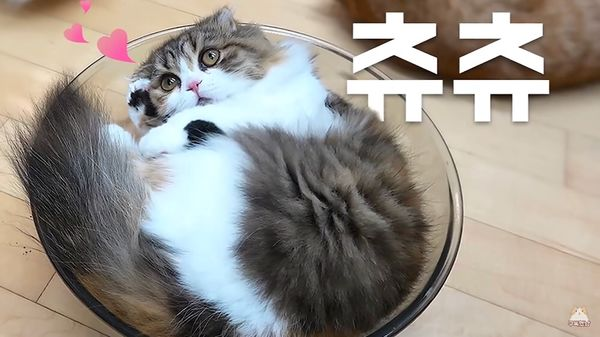

|  | |
| 이름 | 츄츄 |
|---|---|
| 출생 | 2016년 12월 25일 |
| 품종 | 스코티쉬 폴드 / 삼색 고양이 |
| 눈 색 | 회색 → 헤이즐넛 |
| 성별 | 여아 |
| 몸무게 | 2.62kg (20.08.07) |
| 꼬리 길이 | 20cm (털 포함) |
| 별명 | 시츄냥, 썸타는 고양이, 츄무녀, 츄부엉이 등 |
중성화된 암컷 삼색 스코티시 폴드. 장모종이라 하이랜드 폴드라고도 부른다. 개체수가 상당히 적다.[57] 입 아래의 검은 부분은 원래 있는 무늬인데, 색깔 탓인지 종종 턱드름이 났다는 오해를 받기도 한다. 나이는 코코, 모모와 라라, 루루의 중간쯤 되는 고양이. 정확히는 라라, 루루보다 한달 미만 정도로 생일이 빠르다. 그래서 자랄 때도 루루, 라라와 같이 컸고, 모모, 코코와는 2달이지만 약간 세대차가 있다. 막내고양이들로 루루, 라라와 함께 엮여서인지 다리가 짧다는 오해가 있지만 털빨로 인한 것으로 츄츄는 다리가 길고 점프도 잘한다. 현재는 귀도 많이 서서, 접혀있다기 보다는 누워있는 것에 가깝다. 이를 가리켜 싱글 폴드라고 부르기도. 말풍선색은 연한 회갈색. 18년 6월 10일 기준으로 몸무게 2.51kg.
정확한 생일은 모르지만 집사는 12월 25일을 생일로 여기고 있다. 집사가 아는 정보는 12월 말에 태어났다는게 전부라서 그러면 이왕이면 멋진 날로 생일을 삼고 싶었다고. 2017년 12월 10일 라이브에서 생일파티를 진행하며 성묘 인증을 했다.
후술할 4대 고양이들을 입양하기 전까지는 크림 히어로즈 멤버들 중 가장 마지막에 입양된 고양이로, 어린 나이에 두 번 파양을 당하고 돌아갈 곳도 없어 되팔이 될 뻔한 아픈 과거를 가지고 있다. 전 주인이 고양이에 대해서 아무런 지식이 없는 사람이었는지 전혀 관리가 되지 않은 상태였다고 한다. 심지어 임시보호 때문에 츄츄를 데리러 갔을 때, 추운 겨울날 아기 고양이었던 츄츄를 한 손에 들고 나와서 데리고 가라고 했다고...집사는 깜짝 놀라서 인근 펫샵에서 중형견용 이동장을 급하게 사서 데리고 왔다고 한다. 지방이어서 그거밖에 없었다고 하는데, 이따금 보이는 고양이가 쓰기에는 조금 크면서 약간 촌스러운(...) 분홍색 이동장이 그 이동장이다.
크림미식회에서 다른 고양이들은 거들떠보지 않는 망한 요리도 꿋꿋이 먹어주지만, 가끔씩 그조차도 안 되면 모래 묻는 시늉을 하여 은근히 팩트 폭행을 하기도 한다. 주로 고양이들이 볼 일을 보고 변을 묻을 때 하는 행동이다. 또는 반대로, 맛있는 음식을 다른 고양이들이 먹지 못하도록 숨기거나 나중에 먹으려고 남겨놓는 습성이기도 하다. 문제는 먹기 전에 그랬다는 것... 맛있는 것을 먹으면 눈물을 흘린다. 집사요리vs사료 대결에서 집사 요리를 가장 많이 선택한 고양이로, 2위인 모모와 함께 크림미식회에서 집사의 영패를 막아주는 보루 역할을 하기도 한다. 집사가 음식을 선택하기 전에 덮어놓은 투명 뚜껑에 몸을 걸치며 집사를 쳐다보거나 아예 뚜껑 위에 올라가기도 한다.
2017년 여름부터 루루하고 가까이 붙어있는 모습이 많이 포착되었다. 심지어 다른 고양이에게 그루밍을 할 줄 몰랐던 츄츄가 루루에게 먼저 그루밍을 해주기도 했다. 츄츄가 입양된 지 얼마 안됐을 때 가장 먼저 츄츄에게 가까이 다가왔던 고양이가 루루였다고 한다. 그 외에는 어딘가를 쳐다보며 꾹꾹이 하기를 좋아한다. 꾹꾹이를 하는 고양이는 모모와 코코, 츄츄와 루루밖에 없다고. 그나마도 루루는 츄츄에게만 꾹꾹이를 한다.
눈이 상당히 크고 땡글하다. 눈에 비해 동공은 유독 가는 편으로 세로동공이 도드라져 보인다. 왜인지 커가면 커갈수록 눈이 조그마해지는 느낌도 드는데, 평소에 눈을 게슴츠레하게 뜨고 있어서 그런듯. 눈을 종종 크게 뜨면 아기 시절 얼굴이 그대로 나온다. 그리고 의외로 털이 풍성해서 목욕을 하면 털에 묻힌 긴 다리를 확인할 수 있는데, 이 때문에 디디와 함께 털뚠이(털+뚠뚠이)라고도 불린다. 3대 둔둔이 발의 크기에 비해 젤리가 작고, 발털 때문에 미끄러지는 빈도가 높다. 한 때 라라가 식성 조절이 되어 살이 빠지면서 두 번째로 가벼웠던 적도 있었으나 현재는 아직 아기인 토토와 도도를 제외하면 가장 가볍다.
입양 당시 곰팡이성 피부병에 걸려 있어 목욕을 자주 시켜주었어야 했다. 초기에는 일주일에 두 번이나 목욕해야 했을 정도. 츄츄가 목욕하는 영상은 크림 히어로즈 유튜브 채널 첫 페이지에 올라가 있는 관계로, 처음으로 100만 시청을 넘었다. 그리고 몸이 약해 지금도 종종 잔병치레를 한다고 하며, 내성발톱까지 있어서 발톱을 깎을 때마다 고생하고 있다. 다행히도 내성발톱은 집사가 신경 써서 관리해주는지라 낫고 있는 추세라고 한다. 내성발톱 때문에 발톱을 박고 올라와야 하는 식탁에 잘 못올라왔고, 올라오다가 발톱이 걸리는 바람에 놀라서 이러지도 저러지도 못하고 그냥 주저앉았다가 집사가 내려준 적도 몇번 있을 정도. 다행히도 점차 나아지면서 올라오는 빈도가 늘고 있다. 하지만 이따금 대범한 면모를 보여주기도 하는데, 예를 들어 츄츄, 라라, 루루 중 식탁에서 뛰어내리기를 가장 먼저 시도했다. 물론 착지는 제대로 못 하고 꽈당 해버렸지만. 또 8월 18일 라이브에서는 최초로 캣타워 정상을 정복했다.
파양당한 경험 때문인지 다른 고양이와 비교했을 때 소심하고 겁이 많은 편. 상당히 조용한 성격으로 울음소리도 굉장히 작고, 그나마도 잘 내지 않는다. 크림 에스테틱 츄츄편 중 하나를 보면 집사가 츄츄를 케어하면서 집사 대신 이모(집사의 자매)가 들어오자 도망갔다고 언급하거나, 라라도 잘 올라가는 캣타워에 올라가지 못하는 츄츄를 격려하는 장면이 나온다. 자기 어필도 다른 고양이에 비해 훨씩 적게 하는 편이고 반응 속도도 많이 느린 편이어서, 밥을 주거나 장난감을 가지고 놀 때 다른 고양이들은 즉각 반응하는데 츄츄는 가만히 있다가 뒤늦게서야 흥미를 가지는 경우가 많다. 17~18년도에는 거의 움직이지 않고 있는 경우도 많았고, 행동을 하는 것이 상당히 조심스러워서인지 간식을 먹는 것도 몇 분이고 고민하는 경우가 흔하다. 그런데 '행복하다면 야옹해'를 찍은 이후로 자신이 울면 집사가 더 많이 관심을 가져다 주는 것을 학습했는지 원하는 것이 있으면 집사 근처에서 우는 빈도가 늘었다.[58] 가끔 자신과 크기가 비슷하거나 작은 물건이 있을 경우 번쩍 일어나서 자신이 더 크다고 어필한다. 집사 日 "츄츄가 더 커요~"
그럼에도 불구하고 개냥이 기질이 있다. 성격이 많이 밝아진 이후로는 외부 손님들이 강아지라고 생각할 정도로 집사를 잘 따라서 '시츄'라는 별명도 얻었다. 라라와 함께 대표적인 무릎냥이 중 하나. 티티처럼 과격하진 않지만 질투쟁이 기믹도 있어서 집사 日 "질투껌딱지야" 다른 고양이가 집사에게 케어받는다고 안겨있으면 그 앞에서 계속 쳐다본다. 급기야 9월 21일 방송에서는 티티의 발톱을 깎는 집사 옆에서 야옹거려서 집사에게 안겼다가 티티의 질투 어린 시선을 한 몸에 받기도 했다. 발톱 깎다가 내성발톱을 건들거나 중성화 수술을 위해 피를 뽑을 때도 얌전히 있을 정도로 순하다.
집사의 케어와 다른 고양이들 덕인지 성격도 초반에 비해서 많이 밝아졌다. 츄츄가 에어컨 수리 기사한테 부비는 것을 보고 집사가 기뻐한 적도 있을 정도. 거기다가 한참 냥아치 기질을 보일 시기여서 그런지 황태를 먹튀하거나 다른 고양이(주로 루루)에게 달려들기도 한다. 황태를 먹튀할 때는 집사가 사랑의 맴매를 날리고 턱을 간질여도 끝까지 황태를 물고 늘어지는 근성을 보여줬다. 뭐 으르릉이야 빨리 안 놔? 티티와 모모가 맞은 것에 비하면 강도는 훨씬 약하지만, 평소에 워낙 얌전했던 츄츄인지라 음식 재료를 물고 튄 것만으로도 집사와 시청자들에게 충공깽과 폭소를 주기에 충분했다. 올라온 영상중 한 장면에서 '야 니가 고자질했냐?!' 하며 루루를 물기까지 하는 모습도 있다.루루:내가 호랑이 새끼를 키웠구나! 물론 상황극이고 그저 사이좋게 장난을 치는 모습이지만 루루같은 먼치킨 종이 리치의 차이 때문에 불리해 보이는 것은 기분 탓이 아니다.
평화주의묘로 루루나 라라랑 가끔 장난치는 것 외에는 거의 싸우지 않는다. 심지어 밥그릇 쟁탈전에서도 루루나 라라가 머리를 들이밀어서 밥그릇을 빼앗기면 더 달라는 표정으로 집사를 쳐다보기만 할 뿐이라고. 집사는 너도 그냥 머리 밀어서 뺏어먹으면 되지 않냐고 안타까워하지만...결국 집사가 밥을 줄때는 모두에게 정량 미만으로 주고, 츄츄는 따로 더 챙겨주는 방식을 쓰고 있다. 2018년 들어서는 루루와 라라가 올라오지 못하는 아일랜드형 식탁 위에서 천천히 먹는 고양이인 츄츄와 모모를 올려주고 따로 준다. 모모와 같이 조금씩 자주 먹는 식성을 가진 고양이라 화장실도 갔다 오고 그루밍도 해서 다 먹은 줄 알았는데 어느새 집사 앞에서 야옹거리는 고양이라고 한다. 밥을 먹고 있다가도 다른 생각에 깊이 빠져서 밥을 먹다 말고 여기저기 배회하다 직접 앞에 먹던 밥을 가져다 줘야 그제서야 자기가 밥을 먹고 있었다는 걸 깨닫고 먹는다고 한다. 집사님 피셜 밥먹이기 가장 어려운 고양이.
2018년 5월 들어서 자기주장이 강해지고 대범해지기 시작했다. 5월 6일 생방에서 자신의 참치를 빼앗는 루루에 밀리지 않고 머리를 들이밀고, 식탁 위에서 코코의 참치를 뺏어먹는 모습을 보여주고 있다. 그리고 코코는 코리둥절 이를 집사도 확연히 느끼는지 츄츄를 케어할 때 귀찮아 하거나 목욕시킬 때 도망치려는 것을 보고 되려 기뻐하고 있다. 그간 너무 순한 모습만 보였던 것이 마음이 쓰였던 듯. 하지만 원래 성격은 어디 안가서 냥아치급 과격한 면모는 보여주지 않는다. 화가 나면 한쪽 눈과 입을 찡그리며 송곳니를 보인다.[59] 이후에는 코코와도 사냥놀이를 하기 시작했는데, 대개는 츄츄가 쫓아가고 코코가 도망친다.
한동안 모모에게 많이 맞고 살았는지, 초창기의 소개란에는 '모모에게 맞고 다님'이라고 쓰여지기도 했다.